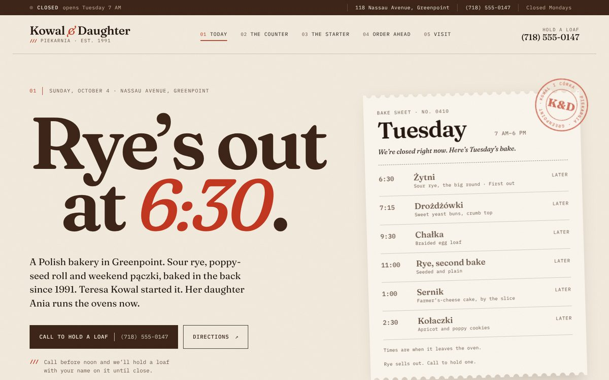
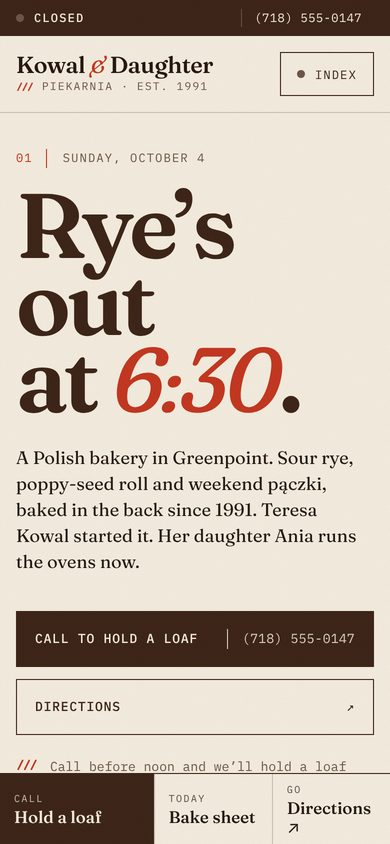
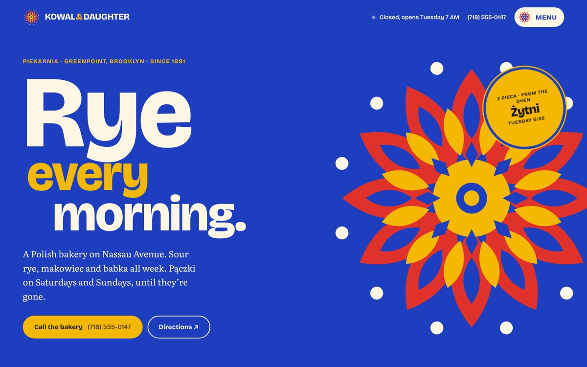
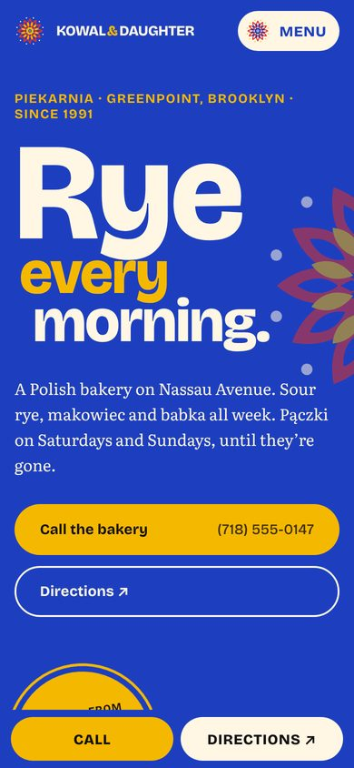

Bakery · Greenpoint, Brooklyn
Kowal & Daughter
A family bakery whose real story is the morning: what came out of the oven, what's left, and what's gone. Two directions: a practical daily bake sheet, or a bold folk-art poster.


Direction 01
The Bake Sheet Recommended
The site works like the chalkboard by the register: today's loaves, what's sold out, and when the next batch is ready.


Direction 02
Wycinanki Poster
Polish paper-cut folk art turned into a bold, colorful brand. The most memorable direction and the most fun to share.